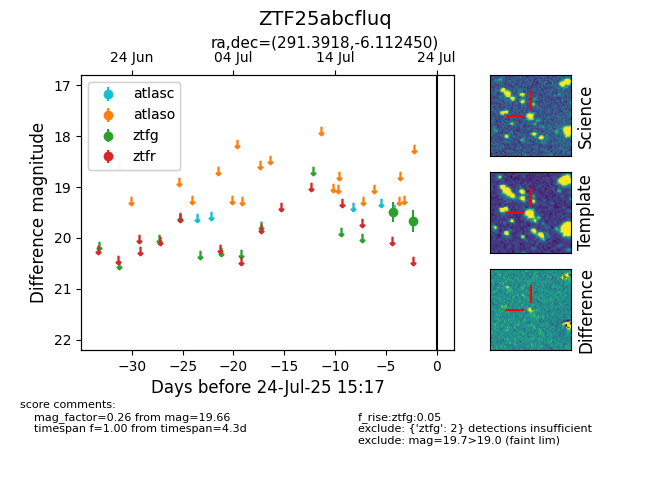

Target ZTF25abcfluq at 2025-07-24 15:17, see:
FINK: fink-portal.org/ZTF25abcfluq
Lasair: lasair-ztf.lsst.ac.uk/objects/ZTF25abcfluq
ALeRCE: alerce.online/object/ZTF25abcfluq
alt names
ZTF25abcfluq (ztf,fink)
coordinates:
equatorial (ra, dec) = (291.3918,-6.11245)
galactic (l, b) = (31.3301,-10.36090)
photometry
last ztfg=19.66
2 ztfg detections
